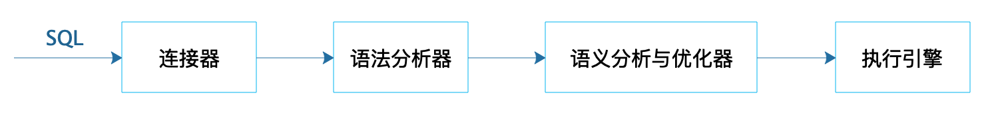
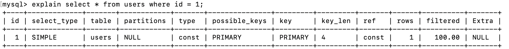
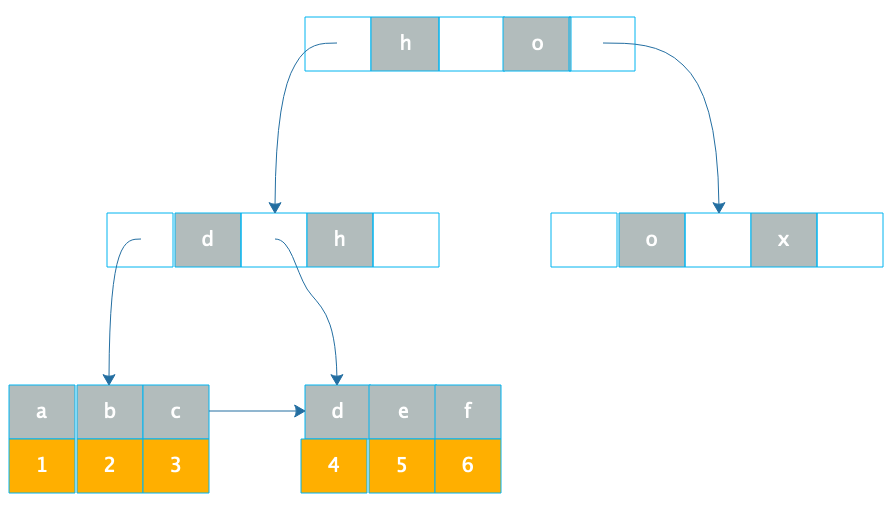

- 00 开篇词 掌握软件开发技术的第一性原理.md.html
- 01 程序运行原理：程序是如何运行又是如何崩溃的？.md.html
- 02 数据结构原理：Hash表的时间复杂度为什么是O(1)？.md.html
- 03 Java虚拟机原理：JVM为什么被称为机器（machine）？.md.html
- 04 网络编程原理：一个字符的互联网之旅.md.html
- 05 文件系统原理：如何用1分钟遍历一个100TB的文件？.md.html
- 06 数据库原理：为什么PrepareStatement性能更好更安全？.md.html
- 07 答疑 Java Web程序的运行时环境到底是怎样的？.md.html
- 07 编程语言原理：面向对象编程是编程的终极形态吗？.md.html
- 08 软件设计的方法论：软件为什么要建模？.md.html
- 09 软件设计实践：如何使用UML完成一个设计文档？.md.html
- 10 软件设计的目的：糟糕的程序员比优秀的程序员差在哪里？.md.html
- 11 软件设计的开闭原则：如何不修改代码却能实现需求变更？.md.html
- 12 软件设计的依赖倒置原则：如何不依赖代码却可以复用它的功能？.md.html
- 13 软件设计的里氏替换原则：正方形可以继承长方形吗？.md.html
- 14 软件设计的单一职责原则：为什么说一个类文件打开最好不要超过一屏？.md.html
- 15 软件设计的接口隔离原则：如何对类的调用者隐藏类的公有方法？.md.html
- 16 设计模式基础：不会灵活应用设计模式，你就没有掌握面向对象编程.md.html
- 17 设计模式应用：编程框架中的设计模式.md.html
- 18 反应式编程框架设计：如何使程序调用不阻塞等待，立即响应？.md.html
- 19 组件设计原则：组件的边界在哪里？.md.html
- 20 答疑 对于设计模式而言，场景到底有多重要？.md.html
- 20 领域驱动设计：35岁的程序员应该写什么样的代码？.md.html
- 21 分布式架构：如何应对高并发的用户请求.md.html
- 22 缓存架构：如何减少不必要的计算？.md.html
- 23 异步架构：如何避免互相依赖的系统间耦合？.md.html
- 24 负载均衡架构：如何用10行代码实现一个负载均衡服务？.md.html
- 25 数据存储架构：如何改善系统的数据存储能力？.md.html
- 26 搜索引擎架构：如何瞬间完成海量数据检索？.md.html
- 27 微服务架构：微服务究竟是灵丹还是毒药？.md.html
- 28 高性能架构：除了代码，你还可以在哪些地方优化性能？.md.html
- 29 高可用架构：我们为什么感觉不到淘宝应用升级时的停机？.md.html
- 30 安全性架构：为什么说用户密码泄漏是程序员的锅？.md.html
- 31 大数据架构：大数据技术架构的思想和原理是什么？.md.html
- 32 AI与物联网架构：从智能引擎到物联网平台.md.html
- 33 区块链技术架构：区块链到底能做什么？.md.html
- 33 答疑 互联网需要解决的技术问题是什么？.md.html
- 34 技术修炼之道：同样工作十几年，为什么有的人成为大厂架构师，有的人失业？.md.html
- 35 技术进阶之道：你和这个星球最顶级的程序员差几个等级？.md.html
- 36 技术落地之道：你真的知道自己要解决的问题是什么吗？.md.html
- 37 技术沟通之道：如何解决问题？.md.html
- 38 技术管理之道：你真的要转管理吗？.md.html
- 38 答疑 工作中的交往和沟通，都有哪些小技巧呢？.md.html
- 加餐 软件设计文档示例模板.md.html
- 结束语 期待未来的你，成为优秀的软件架构师.md.html
- 捐赠
06 数据库原理：为什么PrepareStatement性能更好更安全？
做应用开发的同学常常觉得数据库由DBA运维，自己会写SQL就可以了，数据库原理不需要学习。其实即使是写SQL也需要了解数据库原理，比如我们都知道，SQL的查询条件尽量包含索引字段，但是为什么呢？这样做有什么好处呢？你也许会说，使用索引进行查询速度快，但是为什么速度快呢？
此外，我们在Java程序中访问数据库的时候，有两种提交SQL语句的方式，一种是通过Statement直接提交SQL；另一种是先通过PrepareStatement预编译SQL，然后设置可变参数再提交执行。
Statement直接提交的方式如下：
statement.executeUpdate("UPDATE Users SET stateus = 2 WHERE userID=233");
PrepareStatement预编译的方式如下：
PreparedStatement updateUser = con.prepareStatement("UPDATE Users SET stateus = ? WHERE userID = ?");
updateUser.setInt(1, 2);
updateUser.setInt(2,233);
updateUser.executeUpdate();
看代码，似乎第一种方式更加简单，但是编程实践中，主要用第二种。使用MyBatis等ORM框架时，这些框架内部也是用第二种方式提交SQL。那为什么要舍简单而求复杂呢？
要回答上面这些问题，都需要了解数据库的原理，包括数据库的架构原理与数据库文件的存储原理。
数据库架构与SQL执行过程
我们先看看数据库架构原理与SQL执行过程。
关系数据库系统RDBMS有很多种，但是这些关系数据库的架构基本上差不多，包括支持SQL语法的Hadoop大数据仓库，也基本上都是相似的架构。一个SQL提交到数据库，经过连接器将SQL语句交给语法分析器，生成一个抽象语法树AST；AST经过语义分析与优化器，进行语义优化，使计算过程和需要获取的中间数据尽可能少，然后得到数据库执行计划；执行计划提交给具体的执行引擎进行计算，将结果通过连接器再返回给应用程序。
 应用程序提交SQL到数据库执行，首先需要建立与数据库的连接，数据库连接器会为每个连接请求分配一块专用的内存空间用于会话上下文管理。建立连接对数据库而言相对比较重，需要花费一定的时间，因此应用程序启动的时候，通常会初始化建立一些数据库连接放在连接池里，这样当处理外部请求执行SQL操作的时候，就不需要花费时间建立连接了。
这些连接一旦建立，不管是否有SQL执行，都会消耗一定的数据库内存资源，所以对于一个大规模互联网应用集群来说，如果启动了很多应用程序实例，这些程序每个都会和数据库建立若干个连接，即使不提交SQL到数据库执行，也就会对数据库产生很大的压力。
所以应用程序需要对数据库连接进行管理，一方面通过连接池对连接进行管理，空闲连接会被及时释放；另一方面微服务架构可以大大减少数据库连接，比如对于用户数据库来说，所有应用都需要连接到用户数据库，而如果划分一个用户微服务并独立部署一个比较小的集群，那么就只有这几个用户微服务实例需要连接用户数据库，需要建立的连接数量大大减少。
连接器收到SQL以后，会将SQL交给语法分析器进行处理，语法分析器工作比较简单机械，就是根据SQL语法规则生成对应的抽象语法树。
如果SQL语句中存在语法错误，那么在生成语法树的时候就会报错，比如，下面这个例子中SQL语句里的where拼写错误，MySQL就会报错。
mysql> explain select * from users whee id = 1;
ERROR 1064 (42000): You have an error in your SQL syntax; check the manual that corresponds to your MySQL server version for the right syntax to use near 'id = 1' at line 1
因为语法错误是在构建抽象语法树的时候发现的，所以能够知道，错误是发生在哪里。上面例子中，虽然语法分析器不能知道whee是一个语法拼写错误，因为这个whee可能是表名users的别名，但是语法分析器在构建语法树到了id=1这里的时候就出错了，所以返回的报错信息可以提示，在'id = 1'附近有语法错误。
语法分析器生成的抽象语法树并不仅仅可以用来做语法校验，它也是下一步处理的基础。语义分析与优化器会对抽象语法树进一步做语义优化，也就是在保证SQL语义不变的前提下，进行语义等价转换，使最后的计算量和中间过程数据量尽可能小。
比如对于这样一个SQL语句，其语义是表示从users表中取出每一个id和order表当前记录比较，是否相等。
select f.id from orders f where f.user_id = (select id from users);
事实上，这个SQL语句在语义上等价于下面这条SQL语句，表间计算关系更加清晰。
select f.id from orders f join users u on f.user_id = u.id;
SQL语义分析与优化器就是要将各种复杂嵌套的SQL进行语义等价转化，得到有限几种关系代数计算结构，并利用索引等信息进一步进行优化。可以说，各个数据库最黑科技的部分就是在优化这里了。
语义分析与优化器最后会输出一个执行计划，由执行引擎完成数据查询或者更新。MySQL执行计划的例子如下：
 执行引擎是可替换的，只要能够执行这个执行计划就可以了。所以MySQL有多种执行引擎（也叫存储引擎）可以选择，缺省的是InnoDB，此外还有MyISAM、Memory等，我们可以在创建表的时候指定存储引擎。大数据仓库Hive也是这样的架构，Hive输出的执行计划可以在Hadoop上执行。
使用PrepareStatement执行SQL的好处
好了，了解了数据库架构与SQL执行过程之后，让我们回到开头的问题，应用程序为什么应该使用PrepareStatement执行SQL？
这样做主要有两个好处。
一个是PrepareStatement会预先提交带占位符的SQL到数据库进行预处理，提前生成执行计划，当给定占位符参数，真正执行SQL的时候，执行引擎可以直接执行，效率更好一点。
另一个好处则更为重要，PrepareStatement可以防止SQL注入攻击。假设我们允许用户通过App输入一个名字到数据中心查找用户信息，如果用户输入的字符串是Frank，那么生成的SQL是这样的：
select * from users where username = 'Frank';
但是如果用户输入的是这样一个字符串：
Frank';drop table users;--
那么生成的SQL就是这样的：
select * from users where username = 'Frank';drop table users;--';
这条SQL提交到数据库以后，会被当做两条SQL执行，一条是正常的select查询SQL，一条是删除users表的SQL。黑客提交一个请求然后users表被删除了，系统崩溃了，这就是SQL注入攻击。
如果用Statement提交SQL就会出现这种情况。
但如果用PrepareStatement则可以避免SQL被注入攻击。因为一开始构造PrepareStatement的时候就已经提交了查询SQL，并被数据库预先生成好了执行计划，后面黑客不管提交什么样的字符串，都只能交给这个执行计划去执行，不可能再生成一个新的SQL了，也就不会被攻击了。
select * from users where username = ?;
数据库文件存储原理
回到文章开头提出的另一个问题，数据库通过索引进行查询能加快查询速度，那么，为什么索引能加快查询速度呢？
数据库索引使用B+树，我们先看下B+树这种数据结构。B+树是一种N叉排序树，树的每个节点包含N个数据，这些数据按顺序排好，两个数据之间是一个指向子节点的指针，而子节点的数据则在这两个数据大小之间。
如下图。
B+树的节点存储在磁盘上，每个节点存储1000多个数据，这样树的深度最多只要4层，就可存储数亿的数据。如果将树的根节点缓存在内存中，则最多只需要三次磁盘访问就可以检索到需要的索引数据。
B+树只是加快了索引的检索速度，如何通过索引加快数据库记录的查询速度呢？
数据库索引有两种，一种是聚簇索引，聚簇索引的数据库记录和索引存储在一起，上面这张图就是聚簇索引的示意图，在叶子节点，索引1和记录行r1存储在一起，查找到索引就是查找到数据库记录。像MySQL数据库的主键就是聚簇索引，主键ID和所在的记录行存储在一起。MySQL的数据库文件实际上是以主键作为中间节点，行记录作为叶子节点的一颗B+树。
另一种数据库索引是非聚簇索引，非聚簇索引在叶子节点记录的就不是数据行记录，而是聚簇索引，也就是主键，如下图。
 通过B+树在叶子节点找到非聚簇索引a，和索引a在一起存储的是主键1，再根据主键1通过主键（聚簇）索引就可以找到对应的记录r1，这种通过非聚簇索引找到主键索引，再通过主键索引找到行记录的过程也被称作回表。
所以通过索引，可以快速查询到需要的记录，而如果要查询的字段上没有建索引，就只能扫描整张表了，查询速度就会慢很多。
数据库除了索引的B+树文件，还有一些比较重要的文件，比如事务日志文件。
数据库可以支持事务，一个事务对多条记录进行更新，要么全部更新，要么全部不更新，不能部分更新，否则像转账这样的操作就会出现严重的数据不一致，可能会造成巨大的经济损失。数据库实现事务主要就是依靠事务日志文件。
在进行事务操作时，事务日志文件会记录更新前的数据记录，然后再更新数据库中的记录，如果全部记录都更新成功，那么事务正常结束，如果过程中某条记录更新失败，那么整个事务全部回滚，已经更新的记录根据事务日志中记录的数据进行恢复，这样全部数据都恢复到事务提交前的状态，仍然保持数据一致性。
此外，像MySQL数据库还有binlog日志文件，记录全部的数据更新操作记录，这样只要有了binlog就可以完整复现数据库的历史变更，还可以实现数据库的主从复制，构建高性能、高可用的数据库系统，我将会在架构模块进一步为你讲述。
小结
做应用开发需要了解RDBMS的架构原理，但是关系数据库系统非常庞大复杂，对于一般的应用开发者而言，全面掌握关系数据库的各种实现细节，代价高昂，也没有必要。我们只需要掌握数据库的架构原理与执行过程，数据库文件的存储原理与索引的实现方式，以及数据库事务与数据库复制的基本原理就可以了。然后，在开发工作中针对各种数据库问题去思考，其背后的原理是什么，应该如何处理。通过这样不断地思考学习，不但能够让使用数据库方面的能力不断提高，也能对数据库软件的设计理念也会有更深刻的认识，自己软件设计与架构的能力也会得到加强。
思考题
索引可以提高数据库的查询性能，那么是不是应该尽量多的使用索引呢？如果不是，为什么？你还了解哪些改善数据库访问性能的技巧方法？
欢迎你在评论区写下你的思考，也欢迎把这篇文章分享给你的朋友或者同事，一起交流进步。
© 2019 - 2023 Liangliang Lee. Powered by gin and hexo-theme-book.